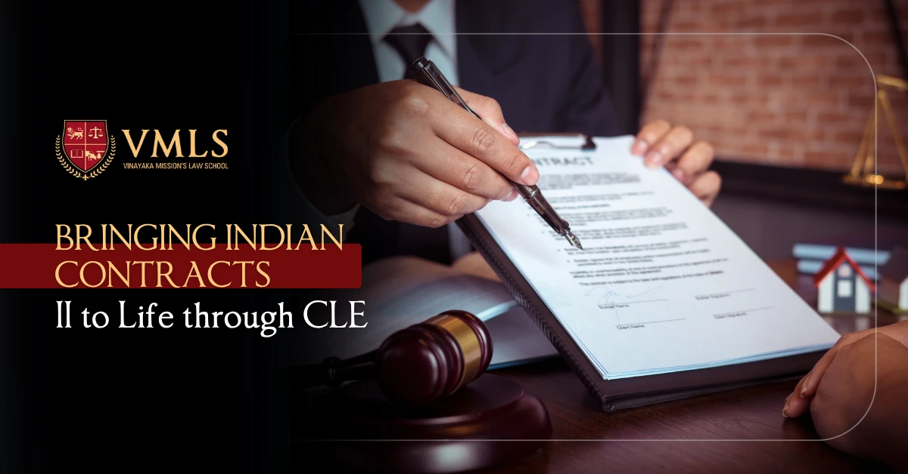

June 21, 2025
0 Views

Clinical Legal Education (CLE) for Indian Contract Law II is quite significant because it offers a practical, hands-on approach to legal learning, which is very vital for honing the skills required for real-world legal practice. It goes beyond academic knowledge to apply ideas in simulated or real-life environments, including legal clinics or mock trials, hence improving critical thinking and problem-solving skills. It is a way that combines the theoretical and practical use of Law. In a Contracts II course, social justice may be discussed via clinical legal education. By interacting with communities impacted by contract-related concerns, students may develop empathy and a knowledge of many viewpoints. This method equips students for the difficulties of court practice and the subtleties of the legal profession by promoting a more whole knowledge of the law. In the changing scene of legal education today, more awareness is developing on the need for practical application of the law rather than only a traditional lecture-based approach. Different educational approaches are evolving in current teaching practice. Among these, Clinical Legal Education (CLE) distinguishes itself as a transformative and effective tool.
A teaching approach in law schools known as Clinical Legal Education (CLE) offers students actual or simulated legal issues to get hands-on, practical legal knowledge. It stresses experiential learning, in which students engage in activities like client interviews, legal counselling, and courtroom simulations. Equipping students with necessary tools for legal practice, CLE seeks to close the gap between theoretical understanding and practical use. For a course like Contracts II, which covers transactions like indemnity, bailment, pledge, agency, sale of commodities and partnership, CLE is not only beneficial but also required.
Indian Contracts II addresses subjects particularly crucial for legal practice. Indian Contracts II dives into more applicable ideas unlike Contracts I which establishes the groundwork and fundamental principles like offer, acceptance and consideration. The importance of CLE in the Indian contracts II are:
The concepts of indemnity, bailment, pledge, agency, sale of goods and partnership are met often in day-to-day activities both in personal as well as commercial transactions. Students who lack experiential learning might not grasp the practical aspect of these ideas and their application in reality. For example, if students also know how to draft a contract of guarantee or if they are required to examine a guarantee contract, they will have good knowledge of the rights and obligations of the surety. This would help them to gain clarity about bank guarantees and would also be relevant and useful if they choose a career as legal adviser in banking sectors.
Essential for a successful legal profession, the CLE method helps students acquire critical thinking, problem-solving, and advocacy abilities. It lets students promote client counselling as well as draft contracts, legal notice, partnership documents etc. Especially when it comes to customizing terms in a contract depending on client demands to reduce legal concerns, this also promotes critical thinking and analytical abilities.
Students gain greater clarity in the application of the law through mock trials, arbitration simulations, critical analysis of case laws, etc., particularly when it comes to determining the extent of a guarantor's liability, especially when there are multiple guarantors, or the enforceability of indemnity clauses.
Understanding client viewpoints, such as risk, negotiating tactics, or compliance issues, is one of the less taught yet crucial facets of contracts law. Students may learn how to think like a legal adviser while considering the interests of their clients via clinical settings like client counselling or legal consultation simulations.
Law school can implement CLE in Indian Contracts II by holding contracts clinics under faculty supervision where students can work to assist new businesses, non-profits, or small enterprises with contract drafting or contract review. This improves their comprehension of the different concepts, such as indemnity clauses in a contract, guarantee, pledge etc.
Additionally, students may take part in simulative activities such as drafting an agency contract or a joint venture agreement. It may be included into the assessment evaluation procedure.
Additionally, law schools may provide workshops in which advocates are invited to instruct students on practical application such as contract drafting and partnership deeds. Students' learning process may be improved by peer review and feedback.
Students might be given case-based learning assessments in which they are given contemporary case studies to help them recognise and comprehend legal issues, formulate arguments, and provide legal solutions. To promote deeper student participation, this might be carried out in groups.
Law schools may provide internships or short-term projects in collaboration with legal tech companies or law firms. Students may help with contract reviews and other tasks that expose them to the changing demands of smart contracts.
Pro bono legal assistance tasks involving contract law, such as drafting partnership agreements for small scale business owners, start-ups, weaker section of individuals or explaining loan guarantee clauses to individuals, may also be promoted to the students. These kinds of exercises assist students in integrating social justice into their legal education.
By taking into account the dynamic, problem-solving character of practicing law, the pedagogy of Indian Contracts II has to change from the traditional classroom lecture approach to the practical application of the law. Through CLE, the legal concepts are transformed from an abstract collection of norms to a set of tools for negotiation, drafting and justice. Law schools may train students not only to understand contract law but also to apply it practically by incorporating real-life exposures, diverse stimulating activities, and client-based learning. Through CLE, students will learn how to apply the law in addition to knowing it, and they will hone their talents in drafting contract clauses, negotiating, advising, and arguing on behalf of their clients.

5-Year Law Programme at VMLS
Jan 08, 2025Several students across India are choosing law as a career due to the various benefits it offers.

3-Year LLB Programme at VMLS
Jan 07, 2025The 3-year LLB (Bachelor of Legislative Law) programme is an undergraduate programme designed to cater...

VMRF Law Aptitude Test (VLAT): A Complete Guide
Dec 30, 2024Vinayak Mission's Law School (VMLS) is one of the best law schools in India and is being mentored by O. P. Jindal Global...

Top Law Colleges in India
Dec 23, 2024In India, law is seen as a noble career option, and the number of students interested in pursuing law is increasing.

Subjects in Law Courses
Dec 18, 2024If you are willing to work in a legal advisory firm, judiciary, or as a lawyer, then pursuing a law degree plays...

CLAT Exam Importance, Eligibility, Criteria and Syllabus
Dec 17, 2024CLAT is a national-level entrance exam, and it stands for Common Law Entrance Test. Many top law universities in India.